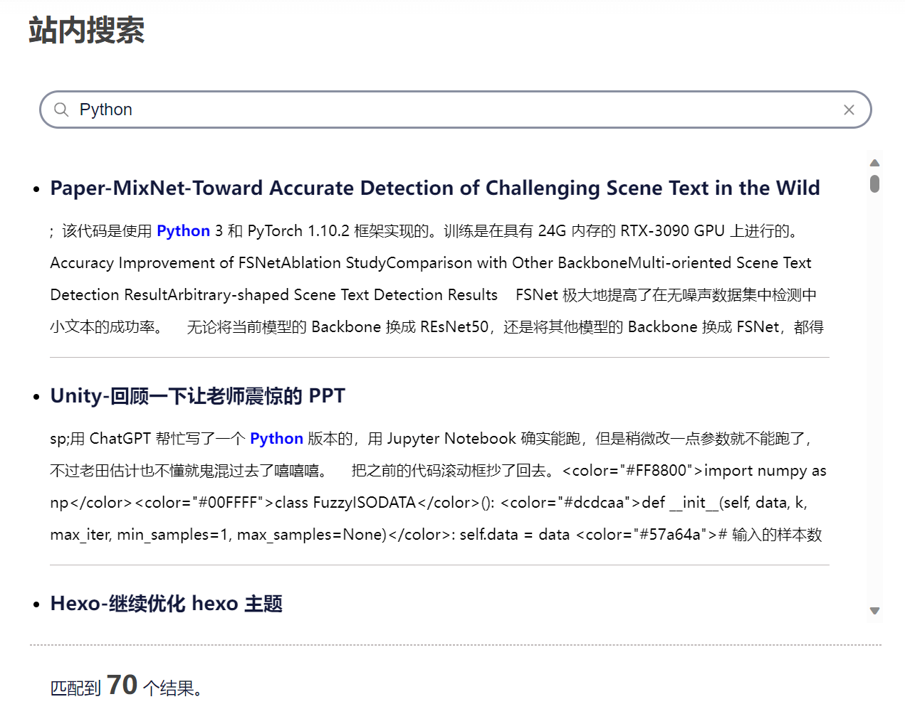
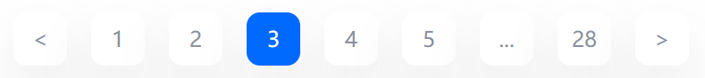
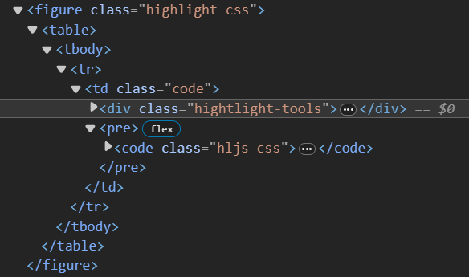
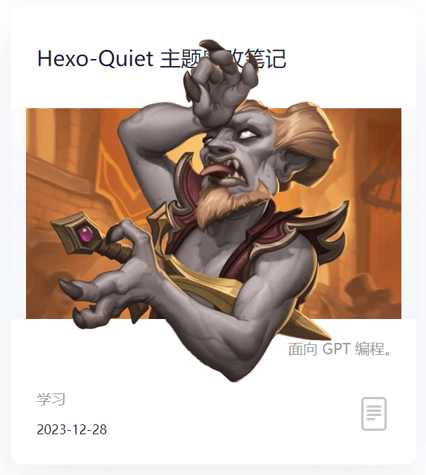
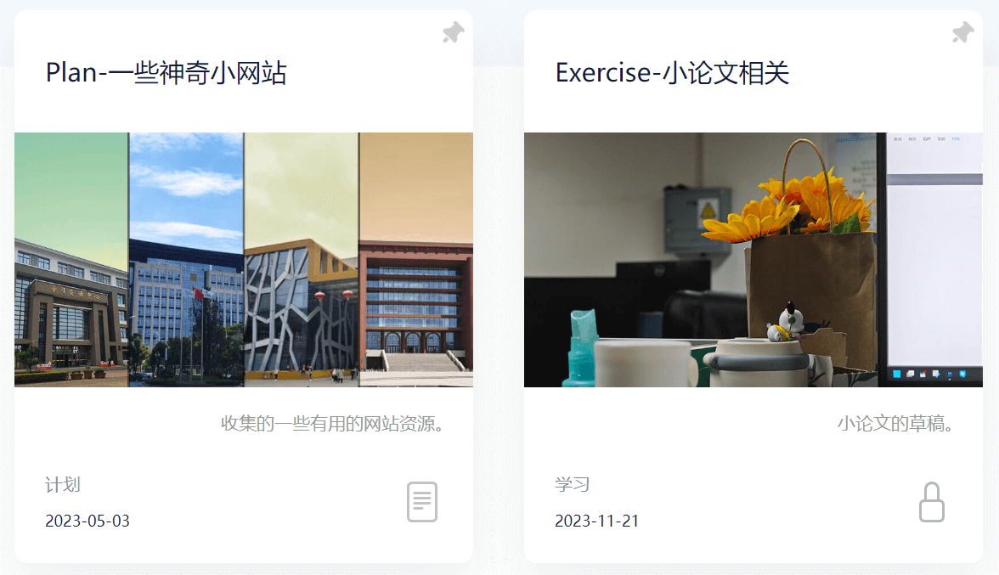

Hexo-Quiet 主题魔改笔记 这个 Quiet 主题的布局个人是很喜欢的，风格简洁且小众。可惜它相比于主流的 NexT 、Butterfly 和 Fluid 等的功能还是太少了😇，于是决定魔改一下它。
这篇博客记录了给这个主题添加的各种功能。
站内搜索
博客里 bb 了太多东西，考虑加一个站内搜索方便检索一下之前的文章。
hexo-generator-search 安装完 hexo-generator-search 插件后，hexo g 就会在 public 文件夹下创建 ./search.xml，这会把所有博客的文章内容整合进去。
后端（算是吧） 接下来就是靠 JS 如何检索文章。Butterfly 已经有自带检索文章的功能了，研究了一会儿没研究出怎么把代码偷下来……找到了一个从零配置搜索功能的文章：
核心就是下面这个 search.js 了，魔改一下：
var searchFunc = function (path, search_id, content_id, match_count_id ) {ajax ({url : path,dataType : "xml" ,success : function (xmlResponse ) {var datas = $("entry" , xmlResponse).map (function (return {title : $("title" , this ).text (),content : $("content" , this ).text (),url : $("url" , this ).text ()get ();var $input = document .getElementById (search_id);var $resultContent = document .getElementById (content_id);addEventListener ('input' , function (var str = '<ul class=\"search-result-list\">' ;var keywords = this .value .trim ().split (/[\s\-]+/ ); innerHTML = "" ;if (this .value .trim ().length <= 0 ) {document .getElementById (match_count_id).textContent = "" ;return ;forEach (function (data ) {var isMatch = true ;if (!data.title || data.title .trim () === '' ) {title = "Untitled" ;var data_title = data.title .trim ();var data_content = data.content .trim ().replace (/<[^>]+>/g , "" );var data_url = data.url ;var index_title = -1 ;var index_content = -1 ;var first_occur = -1 ;if (data_content !== '' ) {forEach (function (keyword, i ) {indexOf (keyword);indexOf (keyword);if (index_title < 0 && index_content < 0 ) {false ;else {if (index_content < 0 ) {0 ;if (i == 0 ) {else {false ;if (isMatch) {"<li><a href='" + data_url +"' class='search-result-title'>" + data_title + "</a>" ;var content = data.content .trim ().replace (/<[^>]+>/g , "" );if (first_occur >= 0 ) {var start = first_occur - 20 ;var end = first_occur + 80 ;if (start < 0 ) {0 ;if (start == 0 ) {100 ;if (end > content.length ) {length ;var match_content = content.substr (start, end);forEach (function (keyword ) {var regS = new RegExp (keyword, "gi" );replace (regS,"<em class=\"search-keyword\">" +"</em>" );"<p class=\"search-result\">" + match_content +"...</p>" "</li>" ;"</ul>" ;if (str.indexOf ('<li>' ) === -1 ) {document .getElementById (match_count_id).textContent = "" ;return $resultContent.innerHTML = "<ul><span class='local-search-empty'>没有找到内容，更换下搜索词试试吧~<span></ul>" ;else document .getElementById (match_count_id).innerHTML = "匹配到 <b><font size=\"5px\"><font color=\"#424242\">" + str.match (/<li>/g ).length + "</font></font></b> 个结果。" ;innerHTML = str;
大致意思就是读取输入框 search_id 里的内容，从 path（./search.xml）检索内容，将检索到的内容和计数分别以列表形式追加到 content_id 和 match_count_id 中。
前端 search.ejs OK，后端就是这样，接下来写前端 search.ejs：
<div class="page-header">
search.css search.css 设计一下布局：
.page-header {display : flex;align-items : center; .local-search {position : relative;text-align : left;display : grid;.local-search-input-box {display : flex; height : 24px ;margin : 20px 10px 0 10px ;padding : 4px 12px ;border-radius : 20px ;border : 2px solid #898fa0 ;color : #666 ;font-size : 14px ;align-items : center; .local-search-input-cls {width : 100% ;color : #12183A ;font-size : 16px ;padding-left : 0.6em ;border : none;outline :none;a .search-result-title {display : flow !important ;width : auto !important ;height : auto !important ;margin-left : 0 !important ;.local-search-result-cls {overflow-y : overlay;max-height : calc (80vh - 200px );width : 100% ;margin : 20px 0 ;@media screen and (max-width : 800px ) {.local-search-result-cls {margin : 20px 10px ;.local-search-empty {color : #888 ;line-height : 44px ;text-align : center;display : block;font-size : 18px ;font-weight : 400 ;.local-search-result-cls ul {min-width : 400px ;max-width : 900px ;max-height : 600px ;min-height : 0 ;height : auto;margin : 15px 5px 15px 20px ;padding-right : 30px ;@media screen and (max-width : 800px ) {.local-search-result-cls ul {min-width : auto;max-width : max-content;max-height : 70vh ;min-height : auto;padding : 0 10px 10px 10px 10px ;.local-search-result-cls ul li {text-align : left;border-bottom : 1px solid #bdb7b7 ;padding-bottom : 10px ;margin-bottom : 20px ;line-height : 30px ;font-weight : 400 ;.local-search-result-cls ul li :last-child {border-bottom : none;margin-bottom : 0 ;.local-search-result-cls ul li a {margin-top : 20px ;font-size : 18px ;text-decoration : none;transition : all .3s ;font-weight : bold;color : #12183A ;.local-search-result-cls ul li a :hover {text-decoration :underline;.local-search-result-cls ul li p {margin-top : 10px ;font-size : 14px ;max-height : 124px ;overflow : hidden;.local-search-result-cls ul li em .search-keyword {color : #00F ;font-weight :bold;font-style : normal;.search_icon {width : 14px ;height : 14px ;.search-dialog {display : block;padding : 64px 80px 20px 80px ;width : 100% ;align-items : center; margin : 0 0 20px ;@media screen and (max-width : 800px ) {.search-dialog {box-sizing : border-box;top : 0 ;left : 0 ;margin : 0 ;width : 100% ;height : 100% ;border-radius : 0 ;padding : 50px 15px 20px 15px ;.local-search-match-count {padding : 20px 20px 0 20px ;color : #12183A ;.search-dialog h2 {display : inline-block;width : 100% ;margin-bottom : 20px ;color : #424242 ;font-size : 1.7rem ;.search-close-button :hover {filter : brightness (120% );#local-search .search-dialog .local-search-box {margin : 0 auto;max-width : 100% ;width : 100% ;.custom-hr , .search-dialog hr {position : relative;margin : 0 auto;border : 1px dashed #bdb7b7 ;width : calc (100% - 4px );input [type="search" ] ::-webkit-search-cancel-button {height : 10px ;width : 10px ;background : url (/image/close.png ) no-repeat;background-size : contain;input [type="search" ] ::-webkit-search-cancel-button:hover {filter : brightness (120% );
部署 index.less 导入 css：
@import "./plugin/search.css" ;
我把这个搜索模块放到了统计页面下 grouping 前，看起来还不错，然后设置一个开关控制这个功能是否启用。
<% if(theme.search && is_archive()) { %>
效果 本地是秒出结果的，部署上去的话会比较卡，乱输的话还会崩溃 emmm 手机试了下没加载成功……果然还是 bb 太多了。

翻页功能改进
这个主题只能提供上一页和下一页两个翻页功能，一页一页地翻效率太低了，不适合这个目前 bb 了 28 页的的博客，修改一下。
方法论 hexo 渲染博客会根据文章数量进行分页。查一下 API：变量 | Hexo ：
变量
描述
类型
page.per_page每页显示的文章数量
number
page.total总页数
number
page.current目前页数
number
page.current_url目前分页的网址
string
page.posts本页文章 (Data Model )
object
page.prev上一页的页数。如果此页是第一页的话则为 0。
number
page.prev_link上一页的网址。如果此页是第一页的话则为 ''。
string
page.next下一页的页数。如果此页是最后一页的话则为 0。
number
page.next_link下一页的网址。如果此页是最后一页的话则为 ''。
string
page.path当前页面的路径（不含根目录）。我们通常在主题中使用 url_for(page.path)。
string
对于首页（index），有 page.prev_link 和 page.next_link 两个变量可以使用，所以实现上一页和下一页的功能是比较容易的。
但要是想翻到其它页，得使用其它变量了。
观察网站的网址。除了第 1 页的网址是 /，其他都是 /page/X。
所以根据 page.current 和 page.total 足以写出翻页逻辑了，设置一个变量 pagination 控制左右显示的页数。
代码 home.ejs 修改 home.ejs：
<div class="change-page">
home.less 再调整 home.less：
.change-page {height : 40px ;display : flex;padding : 0 calc ((100% - 1160px )/2 );margin-bottom : 20px ;color : #FFF ;margin : 0 auto;.box {background : #006AFF ;width : 40px ;height : 40px ;text-align : center;line-height : 40px ;border-radius : 10px ;margin-left : 18px ;box-shadow : 0 20px 40px 0 rgba (50 ,50 ,50 ,0.1 );transition : ease-in-out;transition : margin-top .5s ;transition : margin-top .5s ;transition : margin-top .5s ;.ellipsis .box {background : #fff ;color : #898FA0 ;.page {display : flex;flex-basis : 0 ;justify-content : flex-start;align-items : center;flex-grow : 1 ;a {color : @textColorTheme;text-decoration : none;.box {background : #fff ;color : #898FA0 ;.box :hover {margin-top : -15px ;cursor : pointer;
效果

现在翻页不仅可以翻到上一页和下一页，还可以翻到首页、尾页以及周围的页数。如果周围的页数与首页和尾页不连续，添加省略号。
首页显示 description
在主页文章的 description 以更好地展示这篇文章在大致在 bb 什么。
这对加密的文档，post.excerpt 会一律显示“这里有东西被加密了，需要输入密码查看哦。”，大概是 hexo-blog-encrypt 把 post.excerpt 给强行替换了，我想目前的解决的办法是换一个变量名称？所以按 Buteerfly 的样式将关键词改成了 description。
代码 home.ejs home.ejs 中找到 post-block-content-info，加上显示 post.description 的代码：
<span class="post-block-content-info-description">
home.less home.less 修改样式：
.post-card-description {padding : 10px 16px ;text-align : right;flex-grow : 1 ;font-size : 14px ;font-weight : 500 ;line-height : 36px ;color : #999 ;
效果 最终效果：
代码块辅助
对于又臭又长的代码，设计复制代码按钮、显示代码语言和隐藏代码块三个实用功能。（借鉴自 Butterfly）
方法论 这个主题在渲染 markdown 的代码块语句时，会把它渲染成下图所示的形式：
代码 highlight-tools.ejs 把 <pre> 元素获取了，再把相关参数一并送给 highlight-tools.js：
感觉这么写代码有点不规范，先这样吧！
<%- js('js/highlight-tools.js') %>
function createHighlightTools (codeBlocks, copyIcon, closeCodeBlockIcon, highlight_shrink ) {forEach (function (codeBlock ) {if (!codeBlock.querySelector ('code' ))return ;var container = createContainer (codeBlock);createCopyButton (container, codeBlock, copyIcon);createCodeLangText (container, codeBlock);createCloseCodeBlockButton (container, codeBlock, closeCodeBlockIcon, closeCodeBlock);
先找找这个 <pre> 有没有 <code> 这个子元素，防止误判。
createContainer() 给代码块顶端包一层，用于放置 UI。
然后依次实现三个功能：
createCopyButton()：创建复制按钮createCodeLangText()：代码语言提示文本createCloseCodeBlockButton()：关闭代码块功能
function createContainer() function createContainer (codeBlock ) {var container = document .createElement ('div' );className = 'hightlight-tools' ;parentNode .insertBefore (container, codeBlock);return container;
这样，在代码块上方就会多一个 <div class="highlight-tools">。

之前找的大都要我去引用一个叫 clipboard.js 的东西，结果下载下来引用报错，找了一个不需要插件的代码：
function createCopyButton (container, codeBlock, icon ) {var button = document .createElement ('button' );className = 'copy-button' ;type = 'button' ;title = 'copy-button' ;style .backgroundImage = 'url("' + icon + '")' ;appendChild (button);var span = document .createElement ('span' );textContent = "已复制" ;className = 'copy-notice' ;appendChild (span);addEventListener ('click' , function (var code = codeBlock.innerText ;var textarea = document .createElement ('textarea' );value = code;document .body .appendChild (textarea);select ();document .execCommand ('copy' );document .body .removeChild (textarea);style .opacity = 1 ;setTimeout (function (style .opacity = 0 ;1000 );
原文中获取代码内容的代码为 var code = codeBlock.textContent; 这么做会舍弃换行符，应改为 var code = codeBlock.innerText;。
同时加上”已复制“的提示文本。
function createCodeLangText() function createCodeLangText (container, codeBlock ) {var span = document .createElement ('span' );textContent = codeBlock.querySelector ('.hljs' ).classList .value .replace ('hljs ' , '' ).toUpperCase (); if (span.textContent === 'EBNF' )textContent = '' ;className = 'code-lang' ;appendChild (span);
获取 hljs 类中另一个类的名称，即为代码语言。如果 markdown 中没有设置代码语言，会渲染成 ebnf 类，把它替换为空。
function createCloseCodeBlockButton (container, codeBlock, icon, highlight_shrink )var button = document .createElement ('button' );className = 'close-code-block-button' ;type = 'button' ;title = 'close-code-block-button' ;style .backgroundImage = 'url("' + icon + '")' ;appendChild (button);if (highlight_shrink)var hljs = codeBlock.querySelector ('.hljs' );style .transform = "rotate(-90deg)" ;classList .add ("closed" );addEventListener ('click' , function (var hljs = codeBlock.querySelector ('.hljs' );if (!hljs.classList .contains ('closed' )) {style .transform = "rotate(-90deg)" ;classList .add ("closed" );else {style .transform = "rotate(0deg)" ;classList .remove ("closed" );
获取 hljs类，给它加一个 closed类，剩余的逻辑交给 css 吧。
文章新增参数 highlight_shrink，如果为 true，默认代码块就是关闭的。
.hightlight-tools {background : #e6ebf1 ;position : relative;height : 32px ;.copy-notice {font-weight : 500 ;position : absolute;right : 30px ;font-size : 14px ;opacity : 0 ;transition : opacity 0.4s ;color : #b3b3b3 ;.copy-button {position : absolute;width : 18px ;height : 18px ;right : 6px ;border : none;background-color : rgba (0 , 0 , 0 , 0 );background-size : cover;top : 50% ;transform : translateY (-50% );.copy-button :hover filter : brightness (120% );.code-lang {font-weight : bold;position : absolute;left : 30px ;font-size : 16px ;color : #b3b3b3 ;.close-code-block-button {position : absolute;width : 16px ;height : 16px ;bottom : 8px ;left : 6px ;border : none;background-color : rgba (0 , 0 , 0 , 0 );background-size : cover;transition : transform 0.4s ;.closed {height : 0 ;padding : 0 !important ;overflow-y : hidden;
右边栏及目录
这个主题自带 toc 功能，用的是 hexo 自带的 toc 功能，但是啥布局也没写……就一直没用。
之前的目录一直用的是 hexo-toc 插件，但是这只能放到文章的一个大片段里，不能随着阅读跟随，体验不太好。
决定重新设计一个目录架构，放到文章右侧并实时跟随。
hexo-toc 插件跟 自带的 toc 冲突了，把它卸了。
回归默认的 toc：辅助函数（Helpers） | Hexo
使用 <%- toc(page.content,{list_number:false}) %> 语句就会一阵输出目录的内容：
对于 hexo 自带的 toc 功能，它会给所有标题添加 ID，ID 内容为标题的内容，同时生成连接 #XXX，使其可以跳转到目标位置。
对于放到网址会有歧义的字符，会用 - 替代（hexo-toc 直接删掉这个字符，我想这是这个插件跟默认的 toc 冲突的原因）。
对于重名的标题，会在后面追加 -X 作为区分。
代码 rightside.ejs 暂时把主题原来的 goTop.ejs 取代了换成侧边栏：rightside.ejs：
<%- js('js/goto_position.js') %>
goto_position.js 魔改原来的 goTop.js 使其可以也滚动到底部：
(function ($ ) {fn .gotoPosition = function (opt ) {var ele = this ;var win = $(window );var doc = $("html,body" );var defaultOpt = {speed : 500 ,iconSpeed : 200 ,animationShow : {opacity : "1" ,animationHide : {opacity : "0" ,var options = $.extend (defaultOpt, opt);click (function (var targetOffset = 0 ;if (opt && opt.target ) {if (opt.target === "top" ) {0 ; else if (opt.target === "bottom" ) {document ).height () - win.height (); animate (scrollTop : targetOffset, speed
toc.js $(“#js-toc”).click() $("#js-toc" ).click (function (var postToc = $("#post-toc" );var content = $("#content" );if (postToc.hasClass ("show-toc" )) {removeClass ("show-toc" );removeClass ("show-toc" );else {addClass ("show-toc" );addClass ("show-toc" );
用于控制目录是否显示，送它一个 show-toc 类，剩下的交给 css。
function getTopHeadingId() 获取当前网页最顶端标题的 id，抄着下面的代码：
不过呢，原文没有考虑标题包含非法字符和重名的情况，取其精华去其糟粕。
function getTopHeadingId (const headings = document .querySelectorAll ("h1, h2, h3, h4, h5, h6" );let topHeadingId = null ;let minDistanceFromTop = Infinity ;for (const heading of headings) {const boundingRect = heading.getBoundingClientRect ();const distanceFromTop = Math .abs (boundingRect.y );if (distanceFromTop < minDistanceFromTop) {id ;return topHeadingId;
document.addEventListener() 目录会根据当前所在位置高亮标题，送它一个 active 类，剩下的交给 css。
当当前标题不在显示范围时，再给它强行滚动到可见范围。
document .addEventListener ("scroll" , function (event ) {const tocLinks = document .querySelectorAll ('a.toc-link' );const topHeadingId = getTopHeadingId ();console .log (topHeadingId);forEach (link =>var href = decodeURIComponent (link.getAttribute ('href' )).replace (/^#/ , '' );;console .log (href);if (href == topHeadingId) {if (!link.classList .contains ('active' )) {classList .add ("active" );var toc = document .querySelector (".toc" );var activeItem = toc.querySelector (".active" );if (activeItem) {scrollTop = activeItem.offsetTop - 100 ;else {classList .remove ("active" );3000 );
toc.css 继续模仿 Butterfly 的布局，展示目录的时候，主页面会向左移动，同时写了移动端的适配。
.post-toc {border-radius : 10px ;background : rgba (255 , 255 , 255 , 0.9 );box-shadow : 0 0 40px 0 rgba (50 , 50 , 50 , 0.08 );padding : 10px 5px 10px 5px ;border : 1px solid rgba (18 , 24 , 58 , 0.06 );.post-toc-title {margin-left : 15px ;font-weight : bold;color : #424242 ;font-size : 18px ;.toc {margin : 12px 5px 5px 5px ;display : block;overflow-y : auto;.toc ::-webkit-scrollbar {width : 5px ;.toc ::-webkit-scrollbar-thumb {background-color : #AAA ; border-radius : 10px ;a {text-decoration : none;ol {display : inline;list-style-type : none;a .active .toc-link {.toc-text {color : #FFF ;.toc-link {margin-right : 5px ;padding-top : 5px ;padding-bottom : 5px ;display : block;li {margin-left : 10px ;background : none;.toc-text {padding : 0 5px ;color : #999 ;.active {border-radius : 8px ;background : rgba (0 , 106 , 255 , 0.8 );span :hover {color : #4183c4 ;@media screen and (min-width : 900px ) {.post-toc {z-index : 2 ;position : fixed;top : 115px ;width : 180px ;right : -250px ;transition : right 0.5s ease-out;.toc {max-height : calc (70vh - 160px );.post-toc .show-toc {right : min (30px , 2vw );.post-content .show-toc {max-width : min (960px , 80vw );transform : translateX (calc (-0.075 * min (960px , 80vw )));@media screen and (max-width : 900px ) {.post-toc {z-index : 2 ;position : fixed;bottom : -30vh ;min-width : 30vw ;max-width : 80vw ;right : min (80px , calc (10vw + 40px ));margin-left : 20px ;transition : bottom 0.5s ease-out;.toc {max-height : 12vh ;.post-toc .show-toc {bottom : 30px ;
已知问题 平滑滚动 Butterfly 跳转目录可以平滑滚动，我做不到呜呜呜（如果通过阻止默认事件来实现平滑滚动，又出了新的 bug——受侧栏影响页面乱跳，giao）。
加密 如果目标文章被 hexo-blog-encrypt 加密，那么 <%- toc(page.content,{list_number:false}) %> 就会读不到东西，导致目录为空，目前没想到什么好的解决办法，难不成要重写逻辑绕开默认的 toc？不会吧不会吧。
目前只好把所有加密文章的目录按钮先翘了。
效果 电脑端：
移动端：
标题图超框
这是自己突发奇想原创的一个功能，增加一个变量控制这个功能让其看上去没有那么屎山。
代码 home.ejs 修改 home.ejs，增加 post.cover_style 变量允许文章头部的 yaml 控制标题图的 style：
<% if(post.cover){ %>
home.less 对应 less：
.img-container {width : 100% ;height : 200px ;background : @headerBackgroundColor ;position : relative;img {width : 100% ;height : 100% ;object-fit : cover;display : block;
超框图制作 用 PS 修一个超框图，就决定是你了，癫狂公爵西塔尔！疯子也要有教养。
我一般的 cover 都是设成 800px 450px 的，这个封面图设置为 800px 738px，用 PS 保证“框”的高度为 450px，“框“的顶部距离画面顶部 150px。
cover_style 文章自定义 cover_style：
cover_style: "height: 164%; position: absolute; top: 0; left: 0; object-fit: contain; transform: translateY(-20.3%);"
覆盖之前的封面图样式：
height: 164%;：由 738 / 450 = 1.64 得到。position: absolute; top: 0; left: 0; object-fit: contain; 超框的处理。transform: translateY(-20.3%);" 向上移 20.3%，因为 150 / 738 ≈ 20.3%。
效果 帅呆了！

置顶图标 对于含有 top 属性的文章，增加一个置顶图标。
代码 home.ejs <% if(post.top){ %>
home.less 对应的：
.stiky {width : 18px ;height : 18px ;margin : 8px 6px 0 0 ;
效果
加密图标
首页展示这个文章是否被加密，防止白点一趟。
代码 home.ejs 根据 post.password 的值是否为空判断这个文章是否被加密。
<% if(post.password){ %>
效果

其它
还有一些 css 的调整没有放上去，按着自己的审美随便调了下。
hexo-blog-encrypt 是一个非常牛逼的插件，让前端加密也变得复杂（至少我不会破解），但是也同时带来了许多问题，比如解密后目录失效和以及 hexo-tag-aplayer 不再工作等，这个问题先搁置吧（不加密 P 事没有，但是有些内容确实互联网裸奔不太好）。
得益于自己的兴趣和 ChatGPT 强大的能力，让我即使没有系统地学过前端知识也能够编写许多代码，确实是个深坑啊！
原主题还有一点编译错误，找机会修一修。
最好把各种颜色都用变量存起来，不然太屎山了。
想起了当时实习的时候看同事写的屎山代码，我已经尽力把代码写的比较规范了。
还有其它神奇小功能，相册 啥的，感觉也不错，有空可以试试，保证主题简洁就可以了。